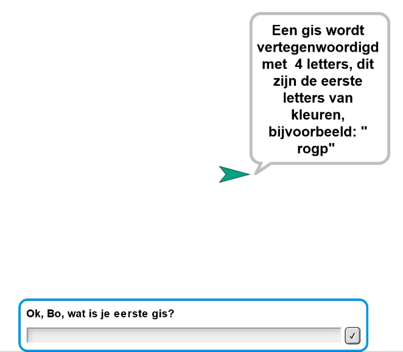
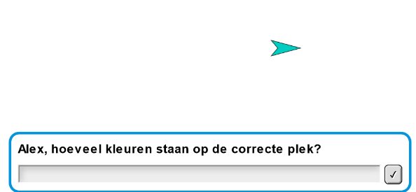
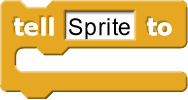
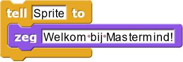
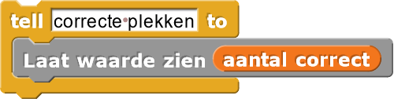

Mastermind
In dit project, ga je beginnen het spel Mastermind™ bouwen. In dit spel kiest één
speler een reeks van vier geheime kleuren en de andere speler probeert ze te raden.

-

Kijk naar deze scripts. Er zijn zes sprites, vier voor de gissen van de speler en twee voor de feedback. - hoeveel kleuren staan op de correcte plek? (Het doel van he spel is om ze alle vier op de goeie plek te hebben.)
- Hoeveel correcte kleuren staan op de verkeerde plek?
- Speel een potje Mastermind met je buur op papier.
-
Iedere speler moet een reeks van vier kleuren opschrijven zonder dat je
buur het ziet.
- Voor het gemak kan je de eerste letter van iedere kleur gebruiken in plaats van de volledige naam: rood, oranje, geel, lichtblauw, blauw, paars. (Gebruik voor nu iedere kleur maximaal één keer)
-
Doe om de beurt een gis naar de kleuren van je buur. Geef na de gis van je
buur twee getallen als feedback zoals hierboven beschreven staat.
- Zijn bijvoorbeeld je geheime kleuren ropg en je buur gokt gobp dan antwoord je "een en twee", omdat één kleur (oranje) op de goeie plek staat en twee kleuren (paars en geel) in de reeks zitten maar niet op de goeie plek staan.
-
Gebruik de informatie van vorige gissen om je volgende gis te maken.
- Na gobp denk je bijvoorbeeld misschien, "Één van mijn kleuren staat op de goeie plek" en twee andere kleuren staan correct. Ik ga raden dat geel op de goeie plek staat en oranje en blauw ergens anders in de lijst moeten. Een goeie nieuwe gis zou dus zijn grob omdat geel op dezelfde plek staat en oranje en blauw op een andere plek." Je buur zal nu antwoorden "nul en drie", wat wellicht klinkt alsof je minder goed hebt dan de vorige keer om dat er nu geen kleuren op de goeie plek staan. Dit is niet zo, omdat je je nu zeker weet dat geel niet de kleur was die op de goeie plek stond. Bij je volgende gis zet je misschien oranje op de tweede plek, enzovoort.
- Je zal dit programma niet in deze les afmaken. Voor nu is het doel om de computer te gebruiken als
notitieblok voor twee menselijke spelers om hun gissen en feedback op te schrijven:
- Vind de namen van de twee spelers zodat je bij kan houden wiens beurt het is.
- Vraag een speler om een gis te doen (met gebruik van vier letters zoals gobp).
- Laat de gis zien op het scherm.
- Vraag de andere speler voor feedback in de vorm van twee getallen.


- Blijf dit herhalen tot de rader het correcte antwoord geeft.
Je zal het handig vinden voor een script om te zeggen wat een bepaalde sprite moet doen. Daar is een blok voor: het blok.
Bijvoorbeeld:   -
"H2-Mastermind"

Feedback aan de rader is twee getallen numbers (zoals hierboven te zien is in iedere rij van het spel)
Mastermindregels
- In plaats van dat je de rader vraagt om vier letters, kan je zes gekleurde knoppen hebben die de rader in een bepaalde volgorde indrukt. Om dit te doen maak je zes sprites, ieder met een andere kleur. Zet ze aan de zijkant van het speelveld zodat ze niet verward worden met de opgeslagen gissen. Je hebt ook een "wis"-sprite nodig met het ⌫-teken als uiterlijk en een "OK"-sprite met een ✓-teken als uiterlijk. Zorg ervoor dat de knoppen het speelveld correct aanpassen.
- Zorg dat beide speler geheime kleurenreeksen hebben en dat ze om de beurt mogen raden. Let both players have secret color sequences, Je zal een extra kolom moeten toevoegen aan de rechterkant van het speelveld en een tweede set sprites voor de knoppen. Het spel stopt als een van de speler de reeks van de ander raadt.